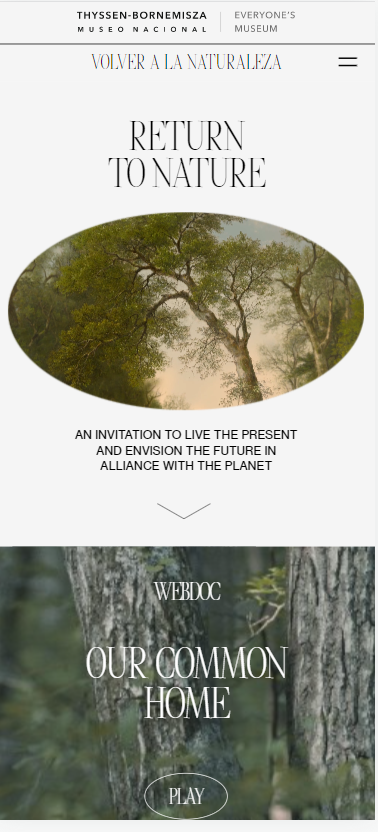
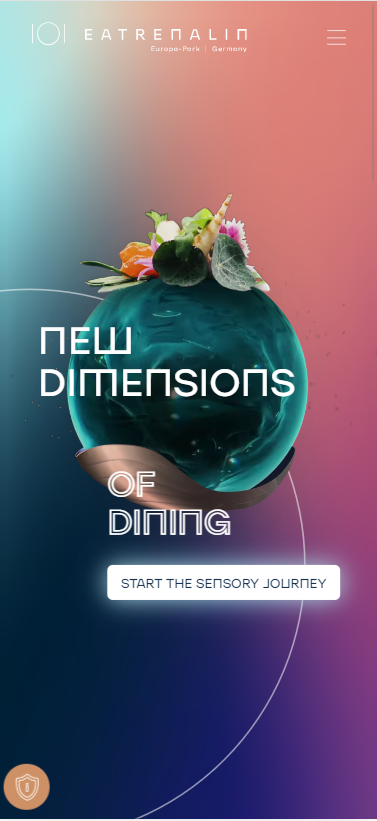

White Space
Hello Monday

White space draws attention and empasis to what is on the page. This page does a great job showing this with the use of empty space and simplicity in the design. It is very clear to see what the website is about becuase there is nothing to distract from it. There is breathing room and it is easy on the eyes.
Visual Hierarchy
The Year of Greta
When you first click on this site it is very clear what they want you to focus on. They place the image of the girl front and center so that is what your eyes go to first. Then, you eyes can trail to her name and what the site is about. The main purpse of the site is to tell about the girl, which is why she is the highest on the visual heirarchy.
Colors
Swab The World
This site is a great example of contrast. The blue and orange are opposite each other on the color wheel, but they are muted to help relieve the harshness of the contrast. It really makes the text and image pop against the background so that you are more interested in the content.